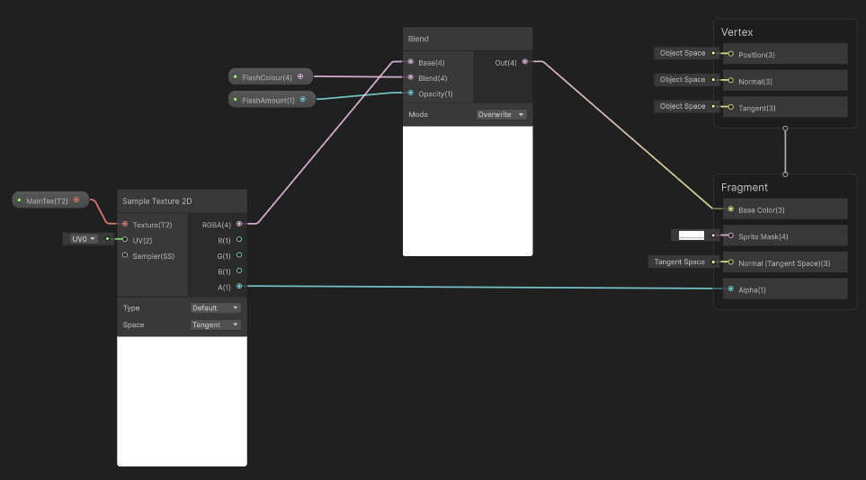
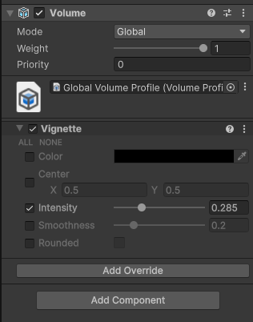
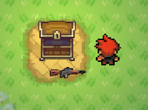
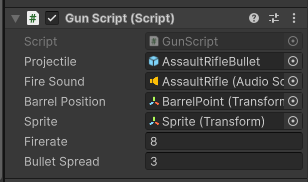

Cryogen Boss Fight
Recreating the Calamity Boss Fight
This was my submition for my introduction to C# programming module for Staffordshire University, and features a recreation of the popular boss Cryogen from Calamity. Obvious changes had to be made to support the top down view of the game, however all attacks and design desitions where inspired by the original boss.
Boss Overview
The cryogen boss has 3 phases, and each where increasingly difficult. It used a simple statemachine, checking whether to switch state each time it was hit, switching to the second phase at 70% health and the third phase at 35% health.
The attacks also varied in different phases. In the first phase the only attack is the directional icicles, however in phase 2 he unlocks a dash attack which does damage and shoots more icicles. In phase 3 these attacks just get more intense.

State Machine
The Cryogen AI implementation uses a state-machine to manage the different states of the cryogens phases. An enum is used to track the different phases which is then checked when running the Update function in a switch statement.

Visual Effects
Even though the focus of the assignment was the programmng side, i wanted to add some visual effects to the game. The first effects i worked on adding where simple particle effects for numerous assets, such as the Cryogens hit effect.
However i wanted to also use the shader graph system provided by Unity, so implemented a flash effect on enemies when they get hit.
I also wanted a more subtle effect to enhance the "Dungeon" vibe, so added a Vignette effect.
Gun Inventory
Whilst not demonstrated in the video above, there is a gun inventory system implemented, allowing players to pickup, swap and unequip guns. In the demo, the player can pick open a chest, which drops a weapon the player can then walk over to pickup. the system is built in a way where if multiple chests where to be in the game, they could pick and swap their weapons by walking over them.
The guns all work of a "Gun Script" component, which supports any projectile based gun, letting the developer set the weapons projectile object, shooting speeds, bullet spread and more. The component has an Update function, which is called by the character controller to run all logic for the weapons.
